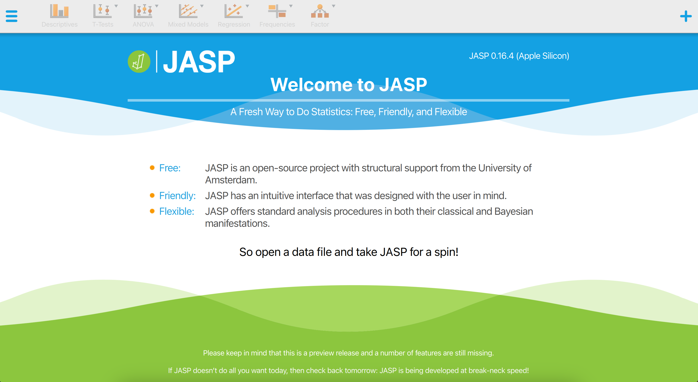
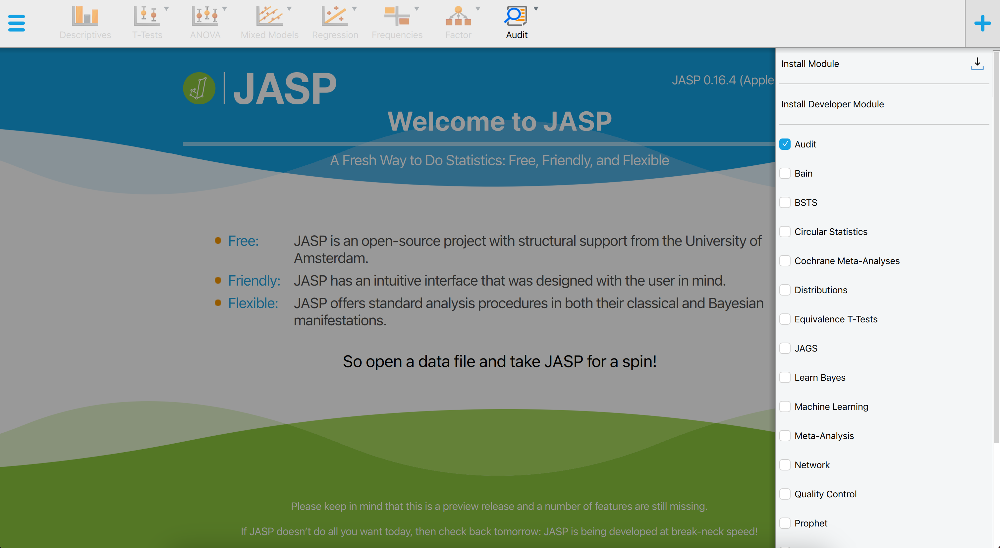
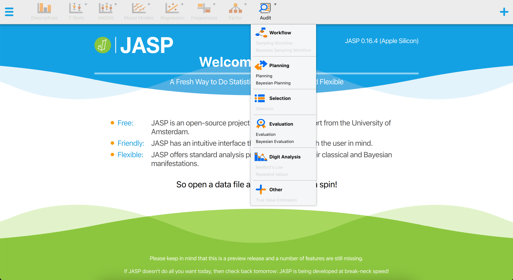
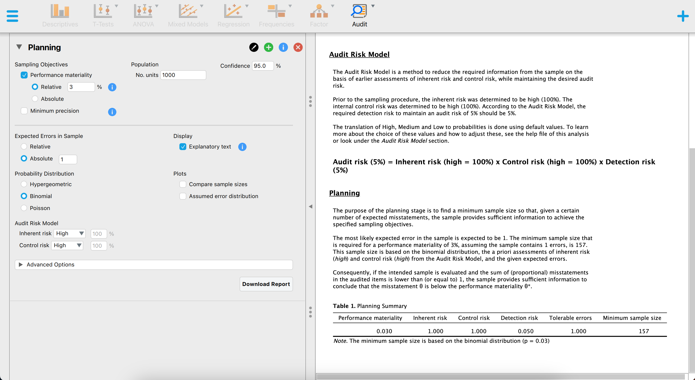
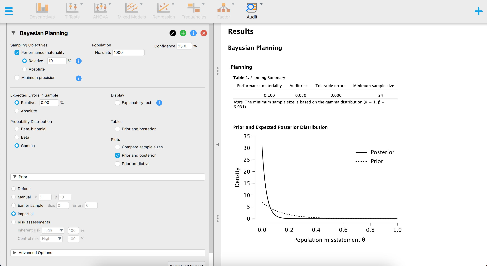
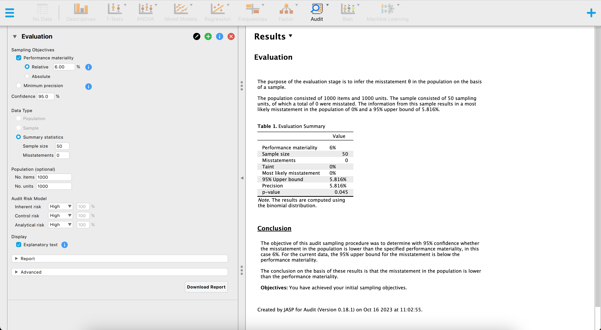
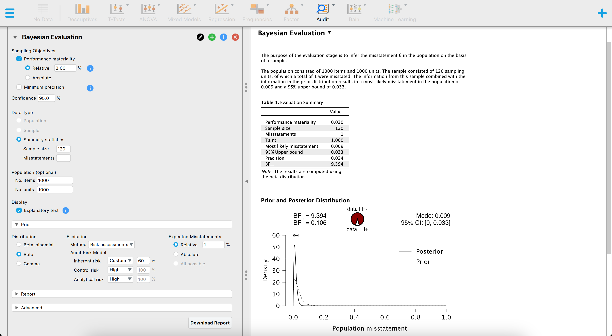
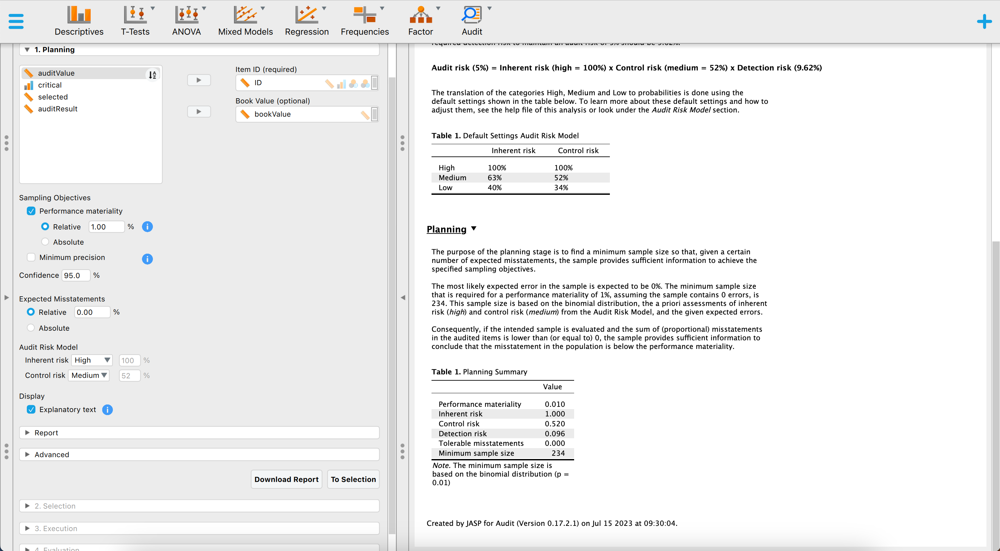
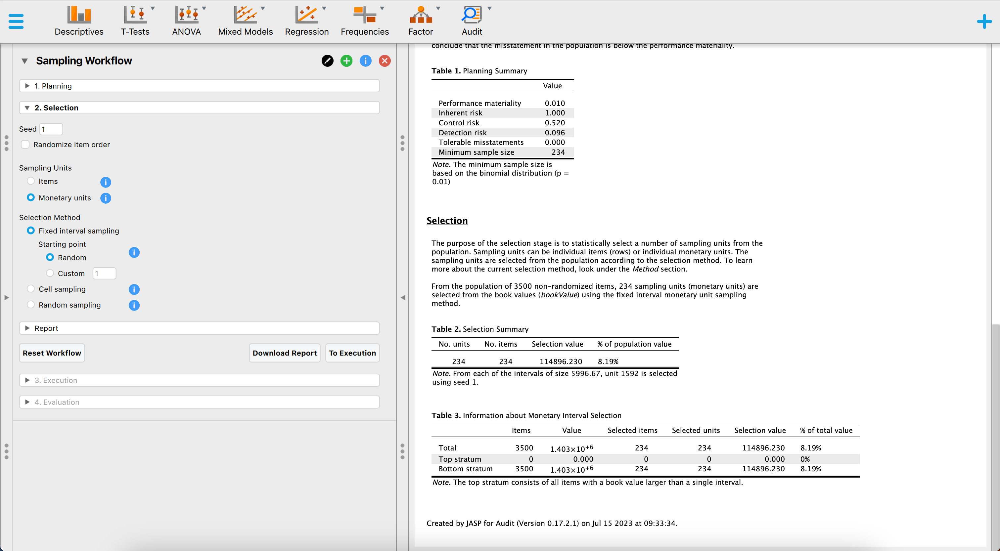
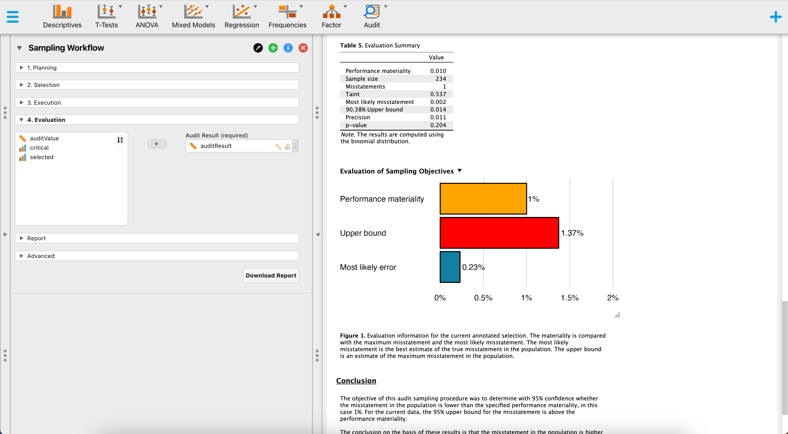

planning(materiality = 0.03, expected = 1, likelihood = "binomial")
#>
#> Classical Audit Sample Planning
#>
#> minimum sample size = 157
#> sample size obtained in 156 iterations via method 'binomial'8 JASP for Audit
JASP (JASP Team, 2023; Love et al., 2019), an acronym for Jeffreys’s Amazing Statistics Program, is a free and open-source software for statistical analysis developed at the University of Amsterdam. It is intended to be user-friendly and familiar to those who have experience with SPSS. A significant feature of JASP is that it provides most standard statistical analysis procedures in both their classical and Bayesian forms. Furthermore, the software is actively being translated into various languages, including Dutch.

8.1 Downloading JASP
You can freely download JASP from their website https://jasp-stats.org. Simply click on the ‘Download JASP’ button on the homepage, and you will be taken to the download page. There, you can select your preferred installation option. JASP is compatible with Windows, MacOS, Linux, and Chrome OS. The installation process is fairly straightforward and familiar. Once installed, open the software to see the welcoming screen displayed below.

JASP for Audit (Derks et al., 2021) is an add-on module for JASP, based on the jfa package, that facilitates statistical audit sampling. The module provides graphical a user interface (GUI) for calculating sample sizes, selecting items according to standard audit sampling techniques, and performing inference about the population misstatement on the basis of a data sample or summary statistics of a sample. The module also features Bayesian equivalents of these analyses that enable the user to easily incorporate prior information into the statistical procedure. In all analyses, the Audit module offers explanatory text that helps the auditor in interpreting, explaining, and reporting the analysis. Since JASP for Audit is an R-based GUI around jfa, its functionality can be mapped almost one-on-one to that of the package.
The Audit module in JASP, labeled as “Audit” in the module list, is included by default in the software, but is not initially visible upon starting the program. To access the Audit module, click on the + icon in the top right corner of the JASP welcome screen, and select the module from the list of available options. The Audit module will then be displayed with a blue icon in the ribbon at the top of the screen.

+ icon displays all modules that are currently available in JASP. To activate a module and add it to the ribbon at the top of the screen, click on the checkbox next to it.Upon selecting the Audit module icon, the user can view all of the analyses that the module contains. It is important to note that some of these analyses are grayed out by default and can only be activated once a data set has been loaded into JASP. This means that the user must first import a data set in order to access and make use of these specific analyses. For a quick explanation on how to achieve this, see this student manual on the JASP website.

8.2 Planning
To plan a sample for an audit using JASP, the procedure is comparable to using jfa. This means that both programs involve similar steps and considerations in order to effectively plan an audit sample. Like jfa, JASP for Audit offers a classical and a Bayesian approach to planning a sample.
The figure below showcases a snapshot of the classical planning analysis in JASP for Audit. The graphical user interface is displayed on the left side of the screen, while the audit report containing statistical results is displayed on the right side. In the user interface, the auditor can input the known parameters for the sample planning, after which JASP calculates and directly displays the statistical results.

The above screenshot shows an analysis where the auditor is using the binomial distribution, a sampling risk of five percent, a performance materiality of three percent and one expected misstatement in the sample. The resulting sample size is \(n\) = 157.
Using jfa, these statistical results can be reproduced by executing the following code:
The figure below showcases a snapshot of the Bayesian planning analysis in JASP. The graphical user interface is largely the same as the interface of the classical planning analysis, with the exception that we can specify a prior distribution with the options under “Prior”.

The above screenshot shows an analysis where the auditor is using the Poisson likelihood together with an impartial gamma prior, a sampling risk of five percent, a performance materiality of ten percent and no expected misstatements in the sample. The resulting sample size is \(n\) = 24.
Using jfa, these statistical results can be reproduced by executing the following code:
prior <- auditPrior(method = "impartial", materiality = 0.1)
planning(materiality = 0.1, likelihood = "poisson", prior = prior)
#>
#> Bayesian Audit Sample Planning
#>
#> minimum sample size = 24
#> sample size obtained in 25 iterations via method 'poisson' + 'prior'8.3 Selection
Selecting a sample in JASP for Audit works similar to how you would do it in jfa. The figure below showcases a snapshot of the selection analysis in JASP for Audit. In the user interface, the auditor can input the known parameters for the sample selection, after which JASP calculates and directly displays the statistical results.

The above screenshot shows an analysis where the auditor is using a fixed interval monetary unit sampling method to select a sample of 60 monetary units from the BuildIt population. They use a starting point of 1.
Using jfa, these statistical results can be reproduced by executing the following code:
set.seed(1)
data(BuildIt)
result <- selection(
data = BuildIt, size = 60,
method = "interval", start = 1, values = "bookValue"
)
head(result[["sample"]])
#> row times ID bookValue auditValue
#> 1 1 1 82884 242.61 242.61
#> 2 60 1 70084 377.41 377.41
#> 3 118 1 59254 353.26 353.26
#> 4 176 1 27801 314.65 314.65
#> 5 235 1 98624 340.60 340.60
#> 6 293 1 38060 403.92 403.928.4 Evaluation
Finally, evaluating a sample in JASP for Audit works similar to how you would do it in jfa. The figure below showcases a snapshot of the evaluation analysis in JASP for Audit. In the user interface, the auditor can input the known parameters for the sample evaluation, after which JASP calculates and directly displays the statistical results.

The above screenshot shows an analysis where the auditor is using the binomial likelihood, a sampling risk of five percent, a performance materiality of six percent and evaluates a sample of \(n\) = 50 items of which \(k\) = 0 contained a misstatement. The resulting 95 percent upper confidence bound is 5.8 percent and the p-value is 0.045, which is lower than the sampling risk of five percent.
Using jfa, these statistical results can be reproduced by executing the following code:
evaluation(materiality = 0.06, method = "binomial", x = 0, n = 50)
#>
#> Classical Audit Sample Evaluation
#>
#> data: 0 and 50
#> number of errors = 0, number of samples = 50, taint = 0, p-value =
#> 0.045331
#> alternative hypothesis: true misstatement rate is less than 0.06
#> 95 percent confidence interval:
#> 0.00000000 0.05815508
#> most likely estimate:
#> 0
#> results obtained via method 'binomial'The figure below showcases a snapshot of the Bayesian evaluation analysis in JASP. The graphical user interface is fairly similar to that of the classical evaluation analysis, with the exception that we can specify a prior distribution with the options under “Prior”.

The above screenshot shows an analysis where the auditor is using the binomial likelihood together with a beta prior distribution based on an expected error rate of three percent constructed using the audit risk model, a sampling risk of five percent, a performance materiality of three percent and evaluates a sample of \(n\) = 120 items of which \(k\) = 1 contained a misstatement. The resulting 95 percent upper credible bound is 3.27 percent and the Bayes factor in favor of tolerable misstatement is 9.394, indicating that the sample data are about 9 times more likely to occur under the hypothesis of tolerable misstatement than under the hypothesis of intolerable misstatement.
Using jfa, these statistical results can be reproduced by executing the following code:
prior <- auditPrior(
method = "arm", likelihood = "binomial", materiality = 0.03,
expected = 0.01, ir = 0.6, cr = 1
)
evaluation(
materiality = 0.03, method = "binomial",
x = 1, n = 120, prior = prior
)
#>
#> Bayesian Audit Sample Evaluation
#>
#> data: 1 and 120
#> number of errors = 1, number of samples = 120, taint = 1, BF₁₀ =
#> 9.3941
#> alternative hypothesis: true misstatement rate is less than 0.03
#> 95 percent credible interval:
#> 0.00000000 0.03267759
#> most likely estimate:
#> 0.0088415
#> results obtained via method 'binomial' + 'prior'8.5 Sampling Workflow
This example demonstrates how JASP for Audit simplifies the standard audit sampling workflow, also known as the “audit workflow.” Let’s consider an instance of the Classical audit workflow involving a fictional construction company called BuildIt, which is being audited by an external auditor from a fictional audit firm.
BuildIt diligently maintains a record of every transaction made in their general ledger throughout the year. The auditor’s primary responsibility is to assess the fairness of these general ledger items, specifically to determine whether this population of general ledger items is free of material misstatement. Material misstatement indicates the presence of large enough to potentially impact decisions made based by someone relying on the financial statements. Given that BuildIt is a small company, its general ledger population comprise only 3500 items, each accompanied by a corresponding recorded book value. Before scrutinizing the population in detail, the auditor must evaluate the reliability of BuildIt’s internal control systems, which processed these general ledger items, and deems them to be reasonably dependable. Therefore, the auditor determines the control risk to be “medium”.
To arrive at a conclusion regarding the accuracy of BuildIt’s recorded items, the auditor divides the audit workflow into the four (by now) well-known stages. Firstly, they plans the size of the sample that needs to be examined to make well-founded inferences about the entire population. Secondly, the auditor selects the necessary sampling units from the population. Thirdly, the auditor inspects the selected sample and determines the audit value (true value) of the items it contains. Lastly, the auditor employs the information gathered from the audited sample to draw inferences about the financial statements as a whole.
To initiate this workflow, the auditor begins by importing BuildIt’s financial statements into JASP. The dataset containing this information is accessible in JASP through the path: “Open” -> “Data Library” -> “7. Audit” -> “Testing for Overstatements”.
8.5.1 Audit Risk Model
In statistical terms, the auditor aims to make a statement with 95 percent confidence about the misstatement in the population is lower than the materiality threshold (i.e., the performance materiality). In this example, the performance materiality is set at one percent. Drawing from the previous year’s audit at BuildIt, where no misstatements were found, the auditor expects zero misstatements in the sample that will be audited. Consequently, the statistical statement can be rephrased as follows: When zero misstatements are detected in the sample, the auditor can conclude with 95 percent confidence that the misstatement in the entire population is below the one percent materiality threshold.
Typically, auditors evaluate inherent risk and control risk (sometimes analytical risk is also taken into acocunt as a fourth constituent of audit risk) using a three-point scale consisting of “Low”, “Medium”, and “High”. Different audit firms employ varying standard percentages for these risk categories. JASP for Audit defines the probabilities associated with low, medium, and high as shown in the table below. Since the auditor has conducted testing on BuildIt’s computer systems, the control risk assessment is determined to be medium (52 percent).
| Level | Inherent Risk (IR) | Control Risk (CR) | Analytical Risk (CAR) |
|---|---|---|---|
| High | 1 | 1 | 1 |
| Medium | 0.63 | 0.52 | 0.5 |
| Low | 0.40 | 0.34 | 0.25 |
8.5.2 Planning
The Sampling Workflow begins with the Planning stage. The auditor enters a performance materiality value of one percent and keeps the confidence level at 95 percent. To ensure the creation of an annotated report, the Explanatory text option is enabled. Moving on, the auditor selects the variables ID and bookValues and assigns them to their respective fields in the interface. Finally, the control risk assessment is adjusted from High to Medium, and the distribution used (e.g., likelihood) is set to the binomial distribution.

The default output provides information that if no misstatements are encountered in the sample, the auditor needs to audit 234 items from the population of 3500 items. This sample size will sufficiently reduce the audit risk to conclude that the population does not contain misstatements larger than one percent. The auditor proceeds to the Selection stage by clicking the “To Selection” button located in the bottom-right corner of the interface.
8.5.3 Selection
The auditor has a variable in the “Book Value” field in the previous stage, which automatically selects the “monetary units” option for sampling units in the Selection stage. By default, the chosen sampling method is “Fixed interval sampling,” and a random starting point is applied. However, these settings can be modified in the corresponding section if needed. The default output shows that 234 euros have been selected, distributed over 234 items. The selection has a total value of 114,896.23 euros, which is 8.19 percent of the total value of the population.

Upon reviewing the default output, the auditor determines that no adjustments are required in this stage. To proceed to the Execution stage, the auditor clicks the “To Execution” button located in the bottom-right corner of the interface.
8.5.4 Execution
During the execution phase, the auditor is prompted to provide two column names. The first column, referred to as the “Column name selection result,” records the frequency of monetary units selected within a transaction for the sample. The second column, known as the “Column name audit values,” allows the auditor to manually enter the audited amounts for the transactions. These column names are automatically populated, but they can be modified based on preference. To input the values for these variables in the dataset, the auditor clicks the “Fill Variables” button. Once clciked, the “Data Entry” section opens, allowing the auditor to input the audit values for the sample. However, if using an example file where the audited amounts are already known, the auditor can proceed directly to the evaluation step without entering the audit values.
Suppose the auditor finds a single misstatement in the sample. Specifically, item four has a recorded value of 431.87 euros and a true value of 200 euros. Hence, it is overstated by 231.87 euros.
8.5.5 Evaluation
In the Evaluation stage, the column created and filled with the audit values is placed in the Audit Values field within the interface. The inference is automatically conducted based on the selected options from the previous stages. The auditor has the ability to adjust the evaluation method, if applicable, and modify the numerical format of the results using the advanced options. Additionally, tables and plots that provide clear visualization of the statistical outcomes can be requested.
Based on the default output, the auditor discovers that out of the 234 items in the sample, one item contained a partial misstatement. This information yields a most likely error of 0.002 (0.23 percent), with an upper bound of 0.014 (1.37 percent) at a confidence level of 90.38 percent. The precision is calculated to be 0.011 (1.1 percent).

Since the 90.38 percent upper bound on misstatement in BuildIt’s financial statements exceeds the performance materiality threshold of one percent, the auditor is unable to conclude that the population as a whole is free from misstatements below one percent. Consequently, the auditor cannot determine that the sampling risk has been sufficiently reduced to conclude that BuildIt’s financial statements are free of material misstatement.